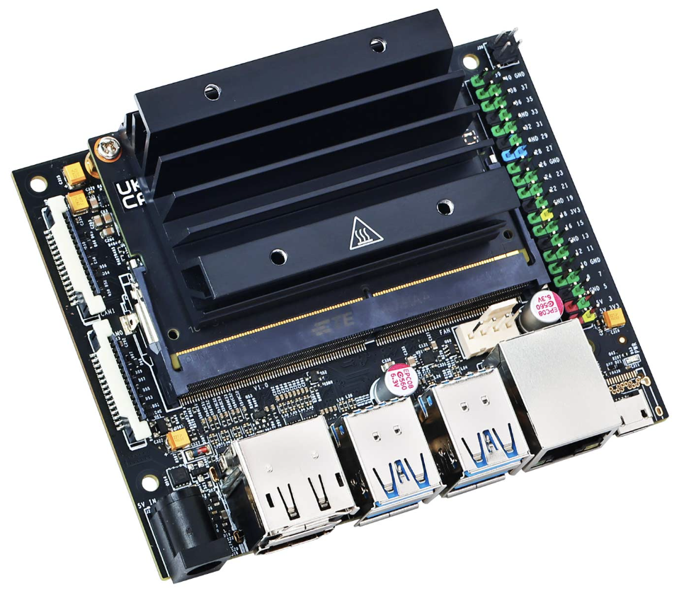

Jetson Nano 4GB(B01/SUB)
 https://www.yahboom.net/study/jetson-nano
https://www.yahboom.net/study/jetson-nano집에 3년간 묵혀둔 Jetson Nano가 있어서 꺼내서 OS를 설치해 보았다. 구매했을 때 정보도 많이 없고 제품에 대한 커뮤니티가 크지 않아서 지금에서야 해본다. 신규 업데이트는 더 2년 이상 없어서 커뮤니티 자체는 망했기에 이 제품을 처음 접한 분들은 이 글을 보고 쉽게 끝냈으면 한다. 😵💫
이 제품 같은 경우에는 일반적인 Jetson Nano와 조금 다른 특징이 있다. TF card 슬롯이 없다… 보통 Single-Board Computer 같은 경우에는 Disk(.iso) file을 TF card에 flash 하는 방식으로 OS를 설치하지만 이 보드 같은 경우에는 없으니… 강제로 설치해야 한다.. ㅎ…
{kind=link}

⚙️ 하드웨어 사양
 https://github.com/YahboomTechnology/Jetson-NANO-4GB?utm_source=chatgpt.com
https://github.com/YahboomTechnology/Jetson-NANO-4GB?utm_source=chatgpt.com| 항목 | 상세 내용 |
|---|---|
| CPU | Quad‑core Cortex‑A57 |
| GPU | 128‑core Maxwell (≈472 GFLOPS) |
| RAM | 4 GB LPDDR4 |
| 저장장치 | 16 GB eMMC (TF Card 슬롯 없음) |
| 부팅 옵션 | eMMC 또는 USB 플래시 드라이브 |
| 전력 소비 | 평균 ≈5 W |
🌐 I/O 및 인터페이스
| 항목 | 상세 내용 |
|---|---|
| USB | USB 3.0 ×4 (외장 저장장치 및 카메라 연결 지원) |
| Ethernet | Gigabit LAN 포트 1개 |
| Video | HDMI 2.0 및 DisplayPort 1.3 |
| Camera | MIPI CSI‑2 포트 지원 |
| GPIO | 40핀 확장 헤더 제공 |
| Power (Input) | Micro‑USB 또는 DC 배럴잭 (5 V 입력) |
🔌 부팅 및 저장 확장
OS를 설치하는 방법은 크게 eMMC와 USB flash Drive 2가지로 나뉜다.
기본적으로 Ubuntu 18.04가 필요하다. 작업을 VMware와 같은 Virtual Machine을 사용하는 사람들은 그냥 원하는 작업 세팅으로 해도 되지만 개인적으로 Ubuntu 18.04를 컴퓨터나 외장하드에 설치해서 진행하기를 권장한다. Version이 구식이라 작동이 잘 되지 않을 수 있다.
USB 부팅 시 extlinux.conf 파일에서 root=/dev/mmcblk0p1 → root=/dev/sda1로 설정 변경이 필요하는데 Ubuntu에서 작업하는 게 편하다. 다음 링크에서 Udisk link를 설치하고 balenaEtcher와 같은 flash 프로그램을 사용해서 설치용 USB를 만들면 된다.
📲 eMMC 설치
개인적으로 USB로 설치하는 방식은 비추천이다. 이 보드 같은 경우는 4.x.x 버전의 OS를 사용하고 4.6.6 버전이 제일 마지막 최신 버전이다. 그러나 USB 설치 Disk file이 현재 4.4(5).x 버전만 있기에 eMMC를 사용하는 게 좋다. 그리고 USB로 설치하다가 실패하면 답이 없다…
Ubuntu 18.04를 처음 부팅하면 인터넷을 사용할 수 없을 것이다. 18 version에서는 Network를 처음에는 유선 이더넷을 사용하고 이더넷을 통해 무선 Wifi를 세팅과 설치를 통해 사용할 수 있다.
Android 사용자는 USB와 컴퓨터를 연결하여 인터넷을 사용할 수 있다. 핸드폰이 Wifi 동글 역할을 하는 것 이다.

🟢 NVIDIA SDK Manager
 https://developer.nvidia.com/sdk-manager
https://developer.nvidia.com/sdk-manager
위 링크를 통해 .deb Ubuntu 설치 파일을 다운하면 된다. 다운하기 전에 NVIDIA 계정이 필요하다. NVIDIA 계정은 만 18세 이상으로 세팅하고 NVIDIA Developer Program에 가입해야 한다.

설치를 하면 로그인 화면이 나온다. 가입한 NVIDIA 계정으로 로그인 하면 된다. 이제 보드를 연결해서 OS를 설치하면 된다.

CPU, MPU, Compute Module 같은 경우는 크게 모드가 2가지가 있다. 보드가 돌아가는 기본적이니 부팅 모드가 있고 외부로 부터 업로드를 받는 Boot(Recovery) 모드가 있다. eMMC는 외부에서 보드로 업로드 하는 작업이기에 Recovery 모드로 진입해야 한다.
간단하게 FC REC와 GND 핀에 접퍼 캡을 연결하면 된다.

컴퓨터 USB port와 보드에 Micro USB 단자와 연결하면 LED가 켜진다. LED가 깜박거리지 않으면 연결이 된 것이다.
lsusbUbuntu에서 Terminal을 열어 작동 여부를 확인한다.
Bus 001 Device 009: ID 0955:7f21 NVIDIA Corp.다음과 같이 나오면 연결이 된 것이다.

연결한 후에 SDK Manager에 다음과 같은 화면이 뜨면 Jetson Nano를 선택해 준다.

TARGET OS를 JetPack 4.6.6을 선택하고 CONTINUE를 눌러 넘어간다.

Jetson SDK Components를 제외하고 accept를 한 후 넘어간다.

다음과 같이 설치가 되고 설치가 끝나면 FINISH를 누르고 나가면 된다.

점퍼 선을 제거하고 부팅하고 세팅이 끝나면 다음과 같이 화면이 나온다. 그럼 끝이다!
이렇게만 보면 되게 간단하다. 그러나 나는 이거를 마지막 이미지 화면을 보기 위해서 3일이 걸렸다.
나는 Flash Jetson Linux를 설치하고 그다음에 에러가 났다. USB 단자를 5년을 사용했더니 설치 중에 맛이 가버린 거다… 처음부터 보드에 설치된 것을 다 flash 하고 다시 설치하면 된다…
다음 Note에서 다루어 보겠다. 😤